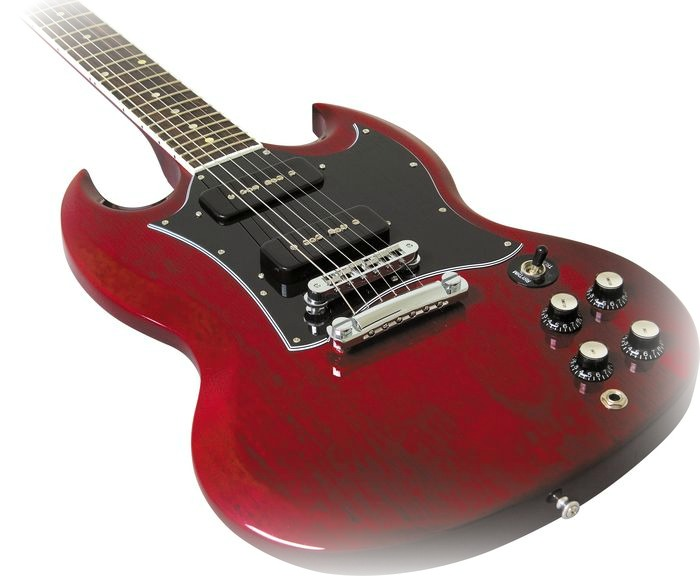
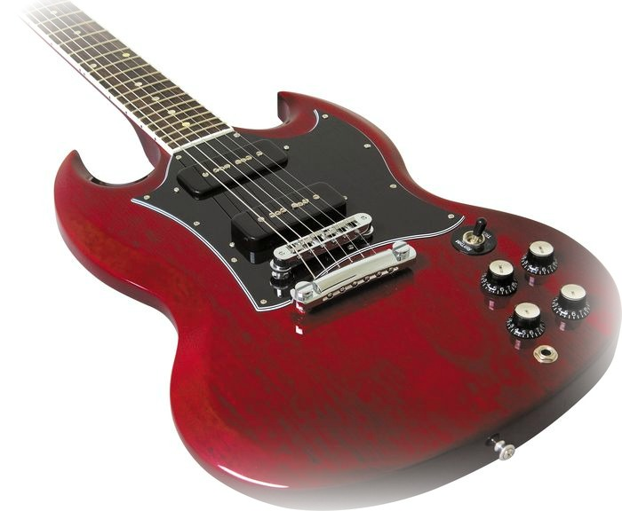
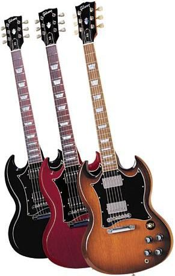

Gibson SG®
Gibson's stylish and toneful SG has been a classic ever since its arrival on the scene in 1961. Its status as the replacement for the Les Paul was only temporary (it was referred to the Les Paul/SG until 1963, when it became merely the SG), but its position as a rock icon was permanent. By the mid '60s, the SG Special (a variant with no-nonsense styling and gnarly P-90 pickups) was the favorite of countless rock and blues artists, and was seen in the hands of Pete Townshend, Carlos Santana, and Robby Krieger, to name but a few. To celebrate this rock classic, Gibson USA introduces the SG Classic Faded, exclusive to Musician's Friend. With a grain-textured satin nitrocellulose finish in Worn Cherry that makes the SG Classic Faded feel like an old friend right out of the bag, this guitar has all the ingredients that made the '60s SG Special legendary, at a price any hard-gigging guitarist can afford.